연세대학교 의료원이 주관하는 정밀 의료 산업기반 구축
AI 기반의 응급의료시스템 개발
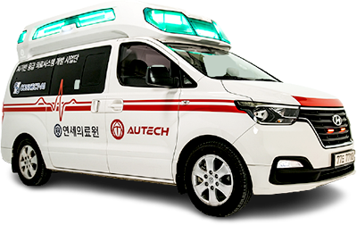
AI 앰뷸런스는 응급상황 발생 시부터 의료기관의 치료에 이르는
응급의료 전(全) 과정에서 환자 정보 연계를 통해 환자에게 적합한 병원을
선정하고 최적이송경로를 안내하여 응급환자의 골든타임을 확보함으로써
중증응급환자 소생률을 높일 수 있는 지능형 응급의료 서비스입니다.
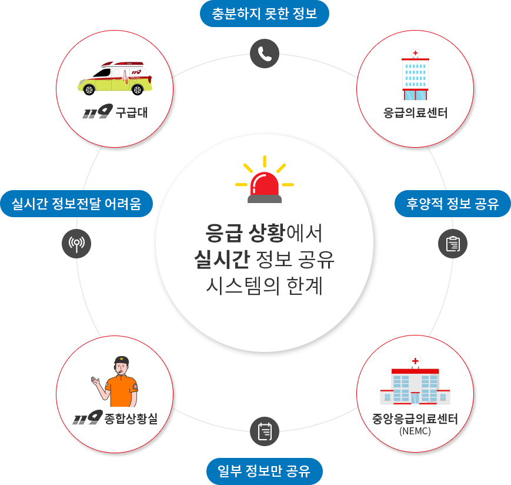
응급의료 서비스의 참여주체인 119구급대, 119종합상황실, 응급의료센터(응급실),
중앙응급의료센터(응급의료 통합 정보망) 사이에 서로 공유하는
체계 및 시스템의 부재로 인해 응급의료 정보에 대한 연계성이 확보되지 않아
중증 환자의 효율적 치료에 많은 문제가 발생하고 있습니다.
이렇게 현재의 시스템의 한계로 인한 응급의료 상황을
전 국민이 체감하는 최적의 응급의료 서비스 제공
응급의료 전(全)단계 연결 인프라 구축
인공지능 응급의료시스템은 ‘영상, 음성, 생체신호’를 기반으로
데이터를 전송하여 각 참여주체인 119구급대, 응급의료센터, 중앙응급의료센터(NEMC) 간의
원활한 정보 연계를 도울 수 있습니다.
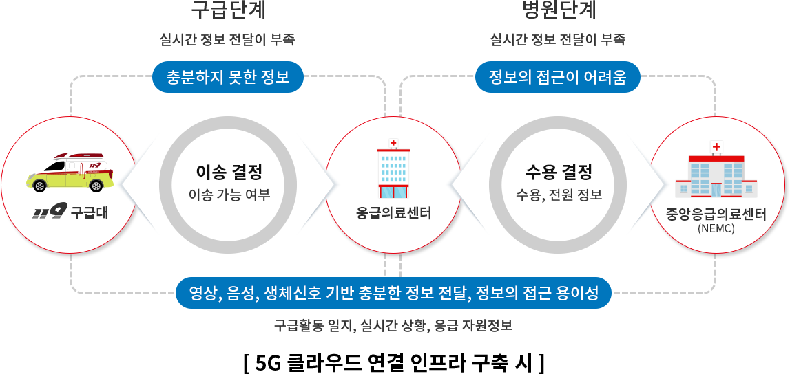
실시간 정보수집 및 서비스 제공을 위한 클라우드 구축
구급 현장의 요청을 ‘실시간’으로 처리하고 환자 정보 ‘안전성’을 충족시키기 위해
‘실시간 구급상황 대응 5G 클라우드’ 및 ‘학습용 클라우드’를 구축하였습니다.
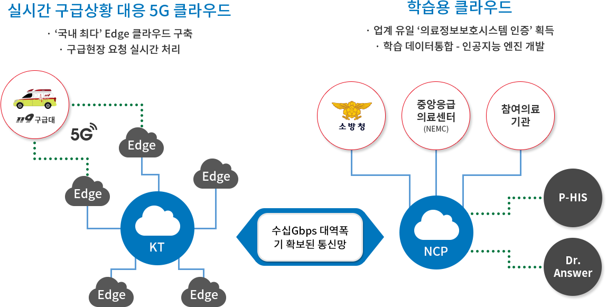
응급데이터 처리 ‘즉시성’과 ‘안전성’을
모두 충족하기 위한 이중화 구성
실시간 정보수집 및 서비스 제공을 위한 구급차 내 장비 구축
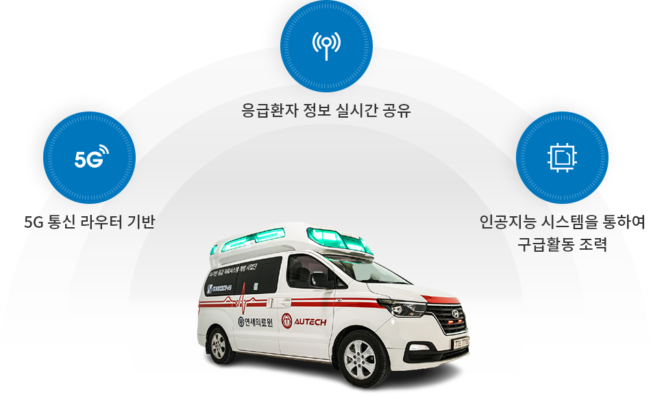
AI 앰뷸런스(인공지능 앰뷸런스) 내 설치 장비
- 5G 태블릿(EMS KIOSK)
- 블루투스 마이크
- 구급활동/제세동기 카메라
- 5G 라우터 등
응급의료 복합 AI 기술 개발
응급상황 발생 시부터 의료기관의 치료에 이르는 응급의료 전(全) 과정에서
환자 정보 연계를 통해 환자에게 적합한 병원 선정 및 최적이송경로 안내를 통해
적절한 처치를 이루는 일련의 시스템을 구축하였습니다.
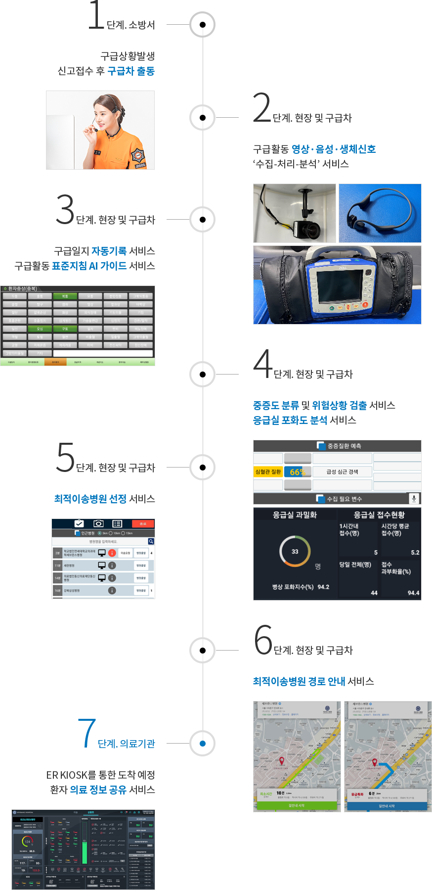
클라우드5G기반 자동화·실시간 데이터 획득
인공지능 응급의료시스템을 적용하면 기존의 데이터 획득 시스템에도 변화를 일으켜
클라우드·5G를 기반으로 실시간·자동화된 데이터를 획득할 수 있습니다.
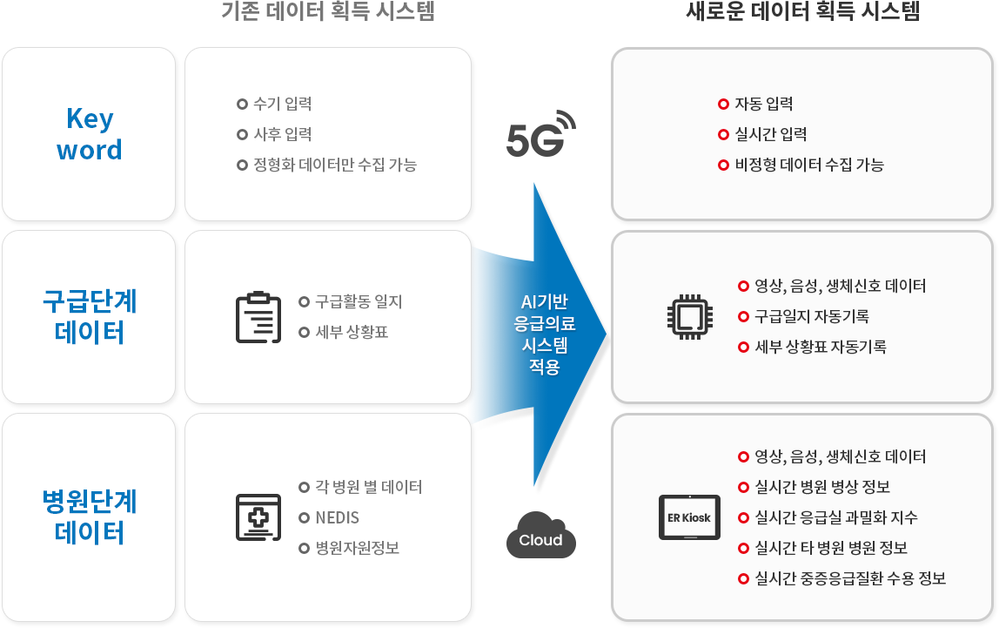
응급의료시스템을 위한 다양한 서비스 개발
- EMS Kiosk란?
- 응급상황 발생 및 환자 이송 시, 구급차 내 비치 또는 구급대원이 소지하며 환자 정보를 수집, 분석, 학습하여 구급대원의 구급행위를
조력하는 장비 입니다.
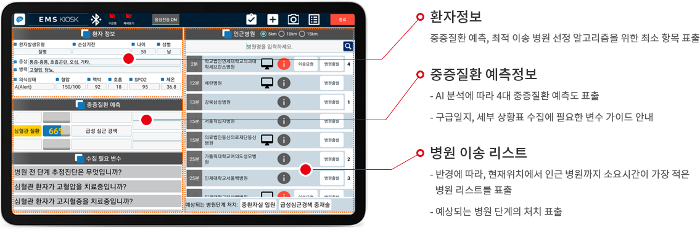
- ER Kiosk란?
- 각 병원의 응급실에 설치되는 키오스크로 이송상황 모니터링, 이송 중 환자 실시간 정보, 병원 응급자원정보 모니터링 등 응급활동 중
발생되는 전반적인 상황 정보를 모니터링 할 수 있는 장비 입니다.
-
이송 화면
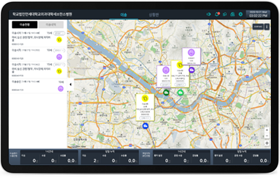
실시간 응급환자 이송 상황을
확인하는 화면
- - 이송 현황 정보 목록
- - 이송 내역 정보 목록
- - 이송차량 위치 정보
- - 이송 집계 결과
- - 응급환자 상세 보기(이동)
-
상시 화면 (상환판)
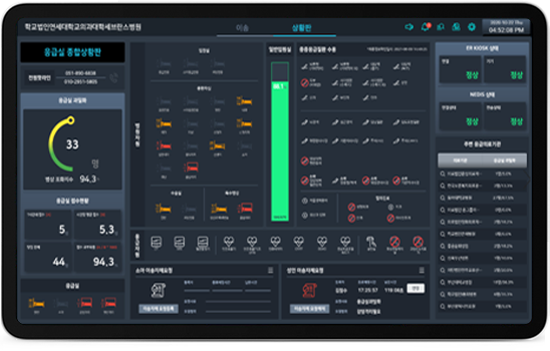
KIOSK 설치 병원 응급자원
정보 제공 화면
- - 응급실 과밀도 정보
- - 응급의료자원 제공 정보(실시간) 병상,
수용가능 중증질환, 응급자원
- - 장비 동작 상태 정보
키오스크, NEDIS agent
- - 중증질환 미수용 메시지 관리
- - 이송자제 요청 관리
- - 주변 응급기관 자원정보 상세보기
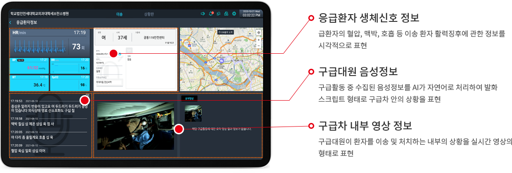
응급환자 이송 특화 경로 AVL-SDK 개발
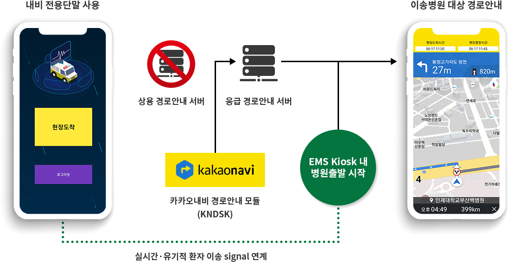
- 응급 차량의 운행 상황에 맞는 최적의 특화 경로를 제공
( 좌회전 불가능한 사거리에서 좌회전 안내, 일방통행 역주행 안내 등 )
- 응급환자 이송 시 신호위반 면책 사례 등, 법률 사항 개정
(도로교통법: 제30조(긴급자동차에 대한 특례), 2021년 1월 개정 )